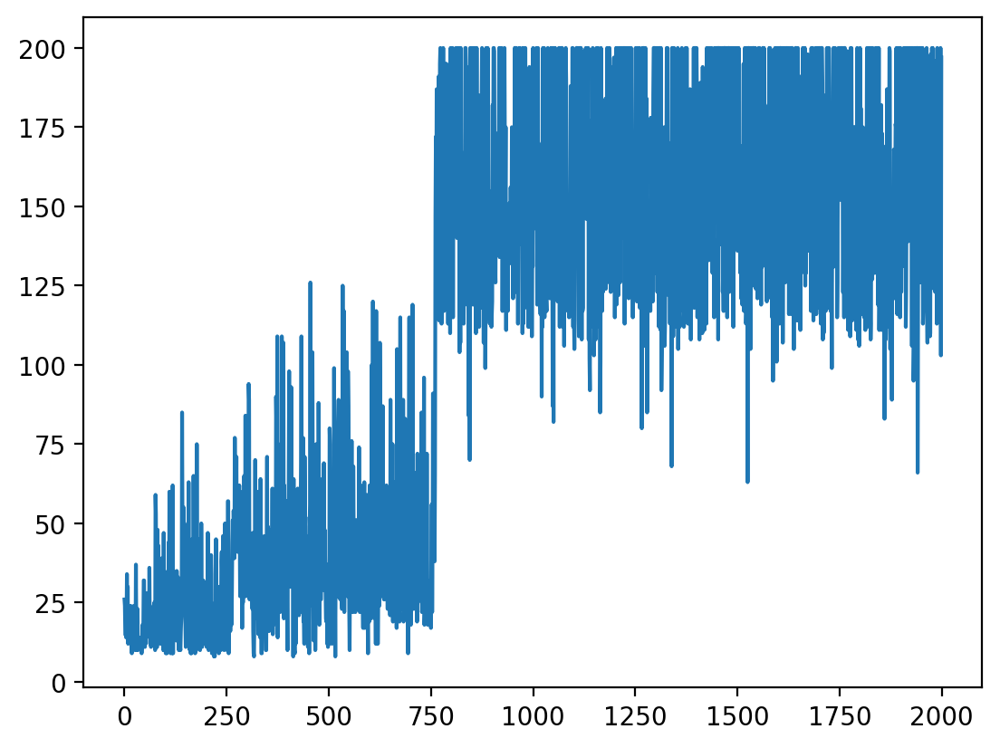
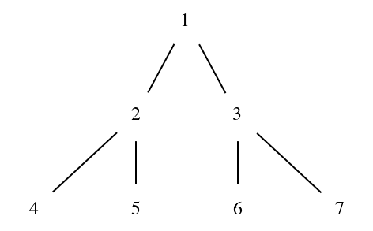
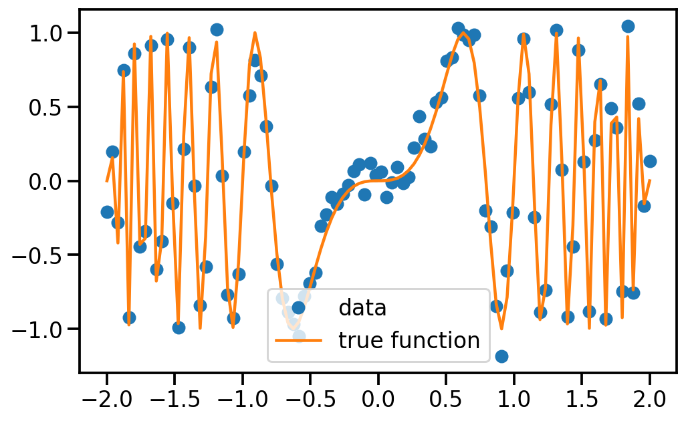
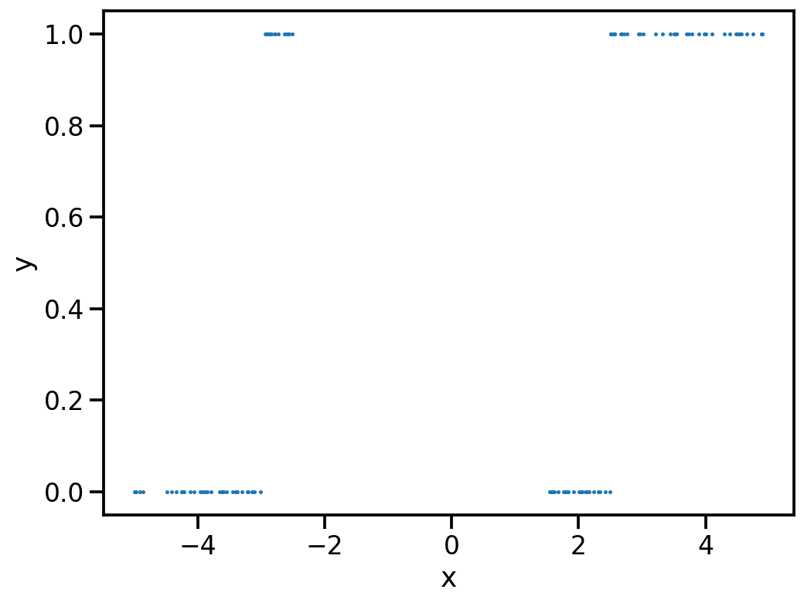
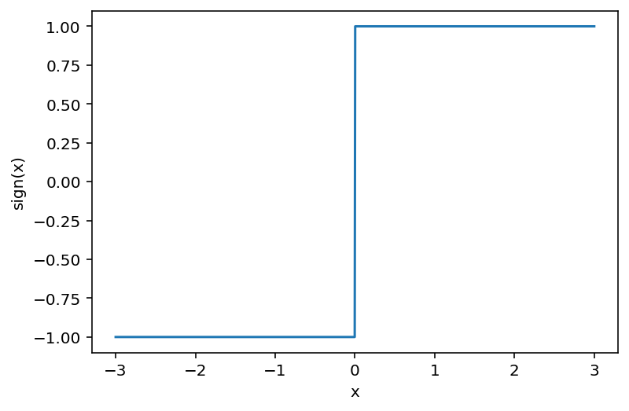
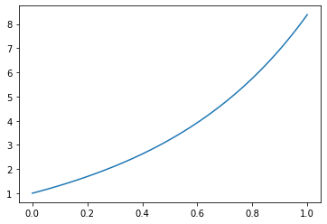
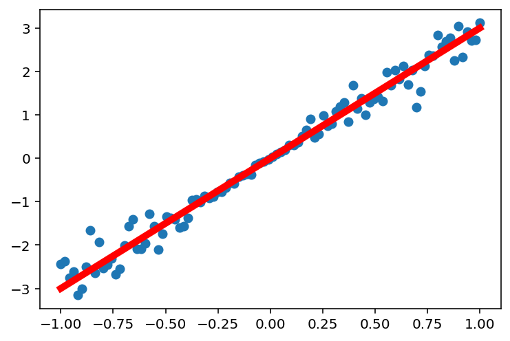
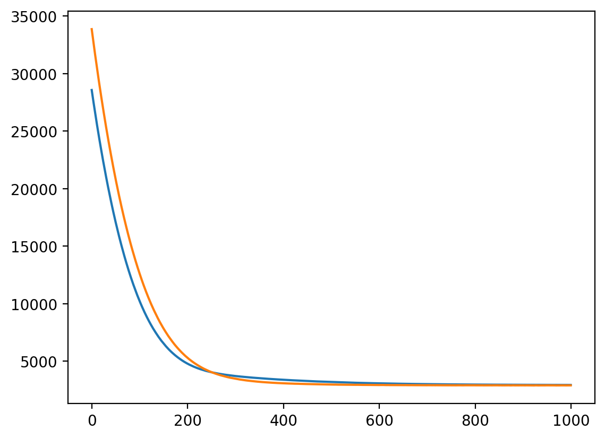
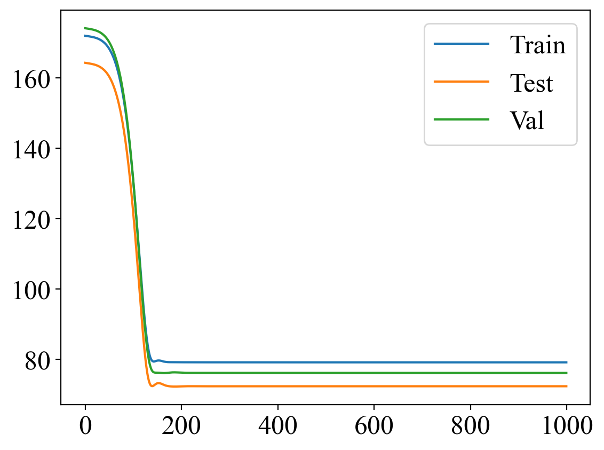
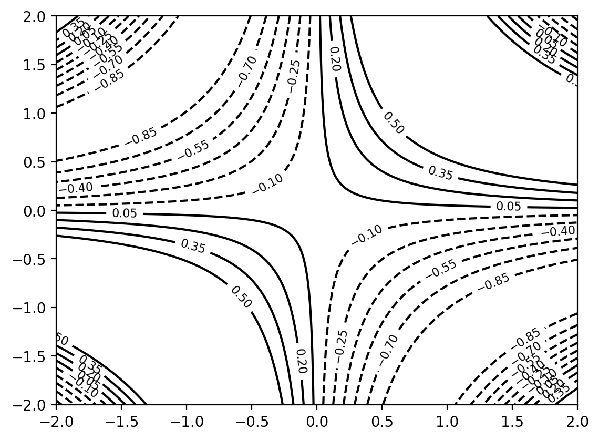
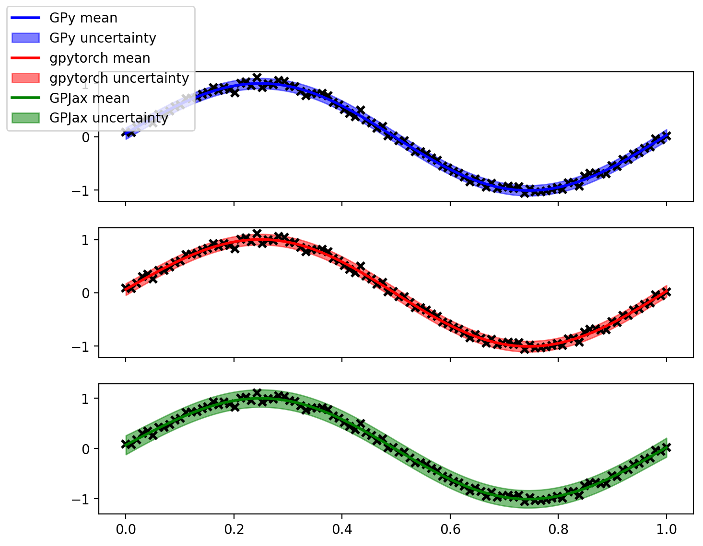
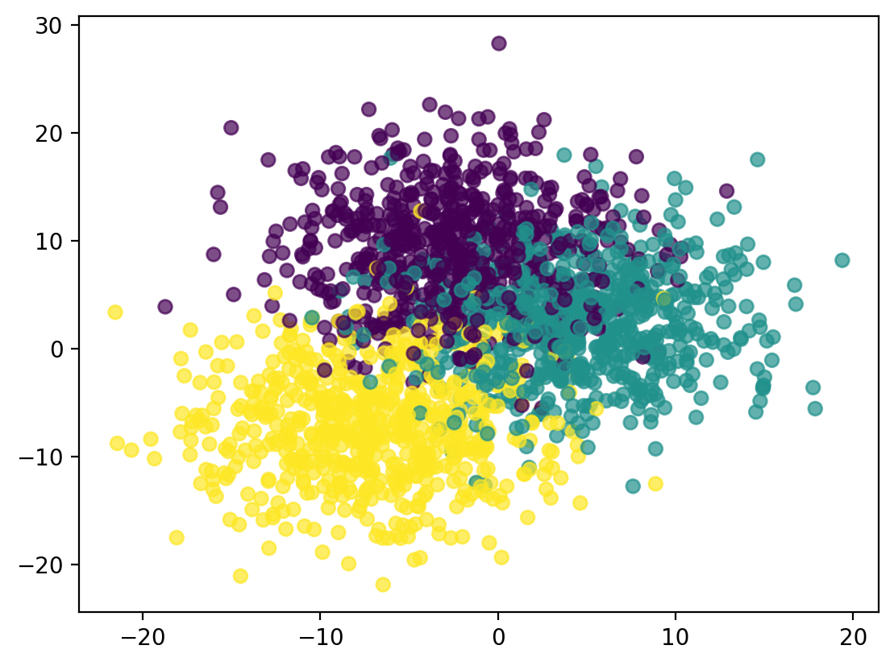
Some useful tidibts in sympy
A programming introduction to Autoencoders in JAX
Probability Calibration
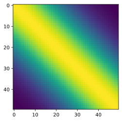
Multi-output Gaussian Process
learn
How to learn the parameters of a GP
Blurring an image selectively using Affinity Photo
Running Python scripts on server over ssh and getting back content
Some of my shortcuts on the iPad
My iPad computing setup
My Mac Setup
Using GPy and some interactive visualisations for understanding GPR and applying on a real world data set
From the ground up!
A programming introduction to Active Learning with Bayesian Linear Regression.
A programming introduction to NNs.
Simple scripts for downloading weather data
A programming introduction to Bayesian Linear Regression.
A minimal example of using markdown with fastpages.
A programming introduction to Gaussian Processes.
HashMaps for programming interviews
How is the world changing over the years!
AQ sensing in India
A programming introduction to query by committee strategy for active learning
Denoising
Some personal reflections..
Neural networks to learn the embeddings! and how to combine them
A programming introduction to recommender systems using Keras!
Adagrad optimizer for matrix factorisation
Same graphic using different libraries!
What if we start from some prior!
Exploring data in Matplotlib
Constrained NMF using CVXPY!
Out of tensor factorisation
What if we to predict for entries not within the matrix?!
MCMC simulations for coin tosses!
Towards amazing plots in research papers!
Maximize based on what you know, re-estimate!
Signal processing for unequal time series!
Programmatic introduction
How the simple least squares can be used in more ways than you thought!
Simulating a continuous HMM
A programming introduction to HMMs for unfair casino problem
Pandas excellence in timeseries!